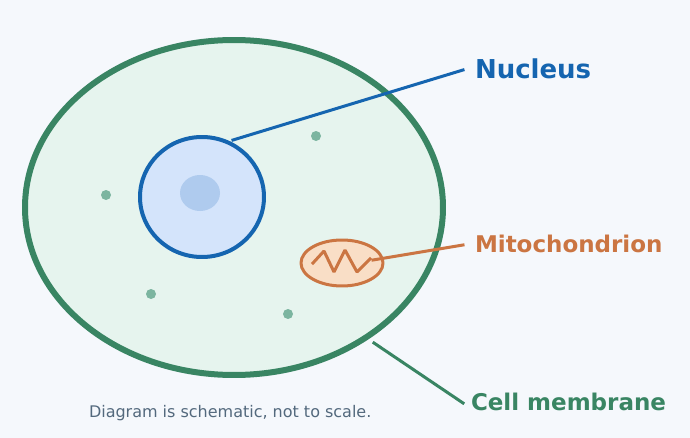

Image occlusion for Anki Desktop · Windows preview
Study straight from your lecture diagrams.
Hide a label on your PDF or PowerPoint slide. Check what the card will ask, then add it to your Anki deck. Draw masks by hand or let AI suggest a first draft.
Which structure does the blue line point to?

Reveal label
Nucleus
Try it in Anki
Download the free Windows add-on
Windows x64 · Tested with Anki Desktop 26.09.3 · 129 MiB
On your computer, open Tools → Add-ons → Install from file in Anki, select the downloaded file and restart Anki.
- Open Tools → AI-nki and choose Try the sample.
- Choose Draw mask and mark two opposite corners around a label. Accept the slide.
- Choose your deck, then Add to Anki → Study.
Can I use my student account?
You can make cards by hand for free, without signing in. For AI suggestions, connect your own eligible ChatGPT Plus or Pro account. Your plan limits apply. AI-nki asks before sharing slide images and text.
Already receiving student Plus? Try the built-in sample with the account that claimed the offer. A promotional account still needs testing. The U.S. offer closed to new claims on October 31, 2026. ChatGPT Free and student Codex credits do not qualify for this connection.